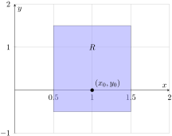

This section corresponds to Section 1.7 from the text.
SubsectionExistence and Uniqueness Theorem
There are two important questions we need to consider when developing a mathematical model using differential equations (i.e. IVPs):
Does the initial value problem have a solution? (Existence).
If it has a solution, is the solution unique? (Uniqueness).
Ideally, the answer to both of these questions will be yes.
Example1.5.1.The answer is no.
Does \(x\dv{y}{x} = \sqrt[3]{y},y(1) = 0\) have a unique solution?
Solution.
We can find a solution to this IVP by treating the ODE as separable. If we do so, we find that \(y = \left(\frac{2}{3}\ln x\right)^{\frac{3}{2}}\text{.}\) On the other hand, we can also eyeball a second solution: \(y=0\text{.}\) So this IVP has two different solutions: \(y_{1} = \left(\frac{2}{3}\ln x\right)^{\frac{3}{2}}\) and \(y_{2} = 0\text{.}\)
Clearly, IVPs don’t always have unique solutions. Sometimes it’s difficult to determine precisely when an IVP can have a unique solution, but most of the cases we’ll care about in this class will fall under the following theorem.
Theorem1.5.2.Existence and Uniqueness Theorem.
Consider the IVP given by \(\dv{y}{x} = f(x,y), y(x_{0}) = y_{0}\text{.}\) If \(f(x,y)\) is bounded and continuous within some rectangle in the plane containing \((x_{0},y_{0})\text{,}\) then the IVP has at least one solution. If in addition \(f_{y}(x,y)\) is also bounded and continuous within some rectangle containing \((x_{0},y_{0})\text{,}\) then the IVP has a unique solution.
If we go back to Example 1.5.1, then we see that Theorem 1.5.2 has something to say about the IVP in that example. In that example, we had \(f(x,y) = \sqrt[3]{y}, f_{y}(x,y) = \frac{1}{3}y^{-\frac{2}{3}}\) and \((x_{0},y_{0}) = (1,0)\text{.}\) Let’s draw a rectangle around this point:

Figure1.5.3.
Now \(f\) is continuous and \(-\frac{1}{2}\leq y\leq\frac{3}{2}\) within this rectangle, so
everywhere inside of this triangle. So Theorem 1.5.2 guarantees at least one solution of the IVP, and indeed there is at least one solution. However, the problem with uniqueness stems from the fact that \(f_{y}\) has a divide-by-zero problem inside this rectangle. Furthermore, it’s impossible to draw a rectangle around \((1,0)\) that avoids this divide-by-zero problem. Hence there is no guarantee of uniqueness.
On the other hand, if we changed the initial condition to \(y(1) = 0.000001\) then we would be guaranteed a unique solution. Moving that initial condition off of the \(x\)-axis is all we need to do to guarantee uniqueness.
SubsectionPicard Iteration
Now that we know of a way to determine whether or not certain ODEs have solutions, we’d like a method for actually finding these solutions. We’ve seen a few different methods for solving specific first-order ODEs, but what we’ll do now is discuss a method that works for a large class of first-order ODEs. The only catch is that it may take us an infinite amount of time to get the solution.
Consider the IVP \(\dv{y}{x} = f(x,y), y(x_{0}) = y_{0}\text{.}\) We can rewrite this differential equation as an integral equation:
It looks quite a bit different, but solutions of this integral equation are also solutions of the corresponding differential equation. Our goal now is to approximate a solution to this integral equation.
To start, let’s make a guess as to what the solution of our IVP should be. To keep things simple we’ll start with a constant function, say \(\phi_{0}(x) = y_{0}\) so that we at least satisfy the initial condition. Now this guess may not be a good match for the solution of the IVP away from the initial condition, so we’ll adjust the guess using the integral equation to get the new function \(\phi_{1}\text{:}\)
Now \(\phi_{1}\) may not be a great approximation either away from the initial condition, but we can adjust it using the integral equation just like we did to \(\phi_{0}\text{.}\)
The method described in the previous paragraph is Picard’s Method. In general, the \(n^{\text{th}}\) iteration of Picard’s Method is given by
and the first iterate is the constant function \(\phi_{0} = y_{0}.\) It may seem strange to consider these functions as approximate solutions of the IVP in question, but each iterate actually solves an IVP very similar to the one that we care about, \(\dv{y}{x} = f(x,y), y(x_{0}) = y_{0}\text{.}\) In particular,
for all \(n\geq1\text{.}\) This method doesn’t always work, but if \(f(x,y)\) satisfies the conditions given in Theorem 1.5.2 then this method will (after potentially infinitely many steps) provide a solution to the IVP. Since the computations involved are quite tedious, it’s best to use a CAS if possible.
Example1.5.4.Using Sage to Compute Picard Iterates.
Consider the initial value problem given by
\begin{equation*}
y^\prime = x + y^2, y(1) = -1\text{.}
\end{equation*}
We want to approximate the solution by using Picard iteration (note that the differential equation is neither separable nor linear!). We do this with the Sage cell below:
SubsectionEuler’s Method
The Picard iteration approach can be useful for finding series approximations of the solution of an ODE. If a more numerical approach is desired, then Euler’s method might be useful. Euler’s method can be thought of as an algorithmic version of tracing a solution curve through a direction field (see Section 1.2).
For Euler’s method, the general rule of thumb is as follows: the smaller \(h\) is, the better the approximation. However, one should expect degrading performance as the method moves farther from the initial condition \((x_0, y_0)\text{.}\)
Example1.5.6.Euler’s Method Applied to Nonlinear ODE.
Let \(y(x)\) denote the solution of the IVP given by
\begin{equation*}
y^\prime = x + y^2, y(0) = 1\text{.}
\end{equation*}
Estimate \(y(2)\) using Euler’s method with a step size of \(h = \frac{1}{2}\text{.}\)
Solution.
First, note that we are justified in saying the solution exists at all by Theorem 1.5.2. Euler’s method now produces the following approximations:
\(n\)
\(x_n\)
\(y_n\)
\(0\)
\(0\)
\(1\)
\(1\)
\(0.5\)
\(1.5\)
\(2\)
\(1\)
\(2.875\)
\(3\)
\(1.5\)
\(7.508\)
\(4\)
\(2\)
\(36.441\)
Such computations are best performed using a CAS, such as the Sage code below: